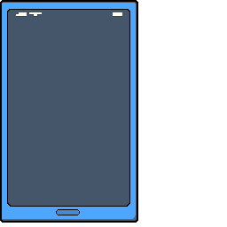
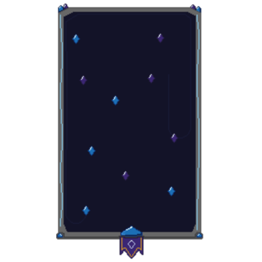
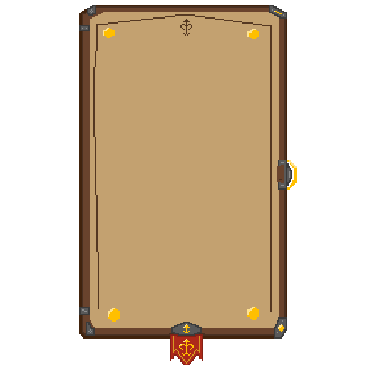

1.20.1 Forge
1.21.1 NeoForge
1.21.1 Fabric
26.2 NeoForge
MCA Social Expansion
Relaciones con memoria, regalos personalizados y cuatro interfaces para mantener el contacto con tus aldeanos, incluso a distancia.
- Mod ID
- mcasocial
- Version
- 0.9.2
- Smartphone, Crystal Social, Letter Social y espejo mágico, con retratos persistentes.
- Mensajes espontáneos con respuestas, conversaciones por temas, disculpas y reconciliación.
- Afinidad, romance, confianza, regalos, Conocer y diálogos para hijos, nietos y bisnietos.


MCA Social Expansion 0.9.2
MCA Social Expansion
Conoce a tus aldeanos, descubre sus gustos y construye relaciones que recuerdan lo que ocurre entre ustedes. La versión 0.9.2 amplía la comunicación remota y mejora los contactos, los retratos y la familia.
Interfaces y objetos
Los cuatro objetos dan acceso a contactos, conversaciones y ajustes. Puedes convertir tu dispositivo desde su menú de interfaces pagando los materiales indicados. Los regalos se entregan en persona.

Social Smartphone
Interfaz moderna tipo app para contactos y conversaciones remotas.

Crystal Social
Interfaz magica para abrir el sistema social con estetica de cristal.

Letter Social
Interfaz de carta para una experiencia mas narrativa y clasica.
Espejo mágico
Una cuarta interfaz con marco dorado para comunicarte con tus contactos.